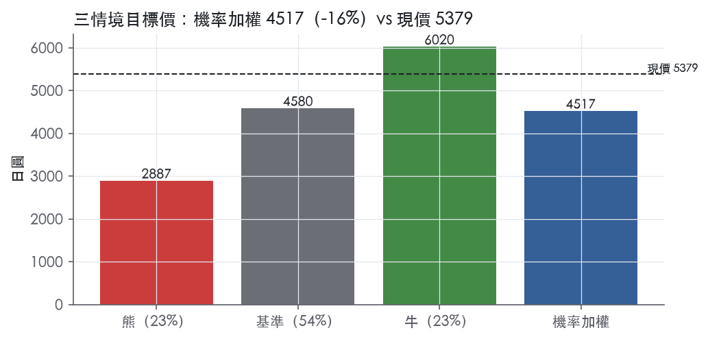
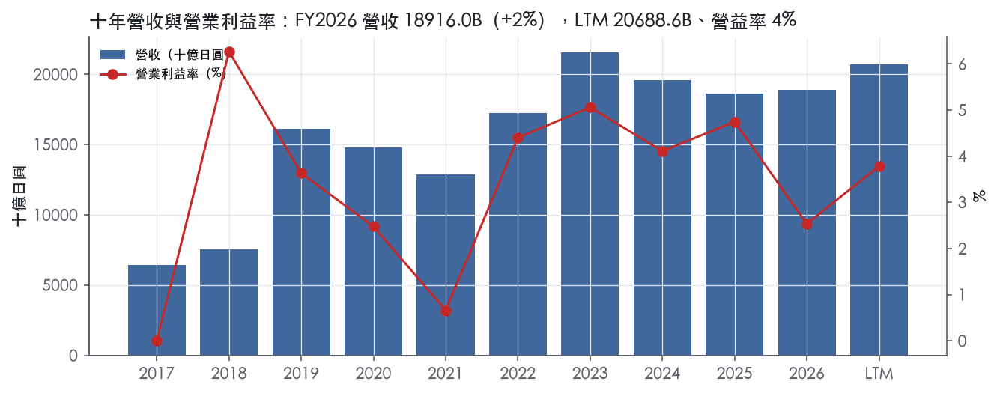
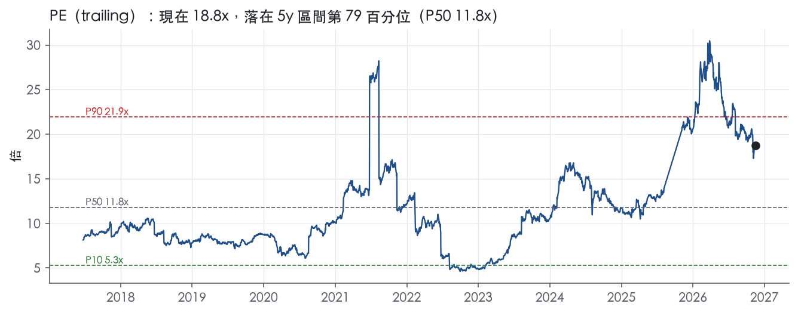
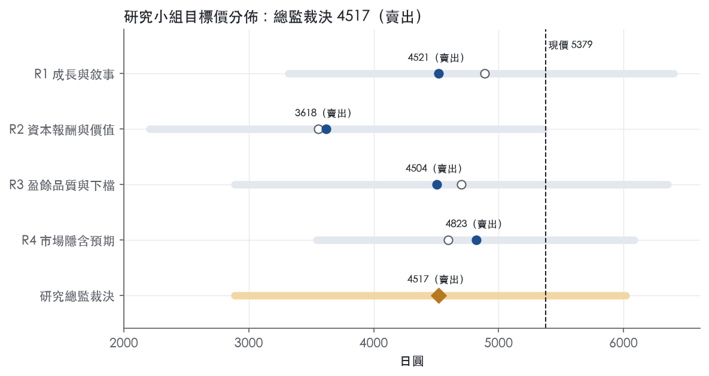
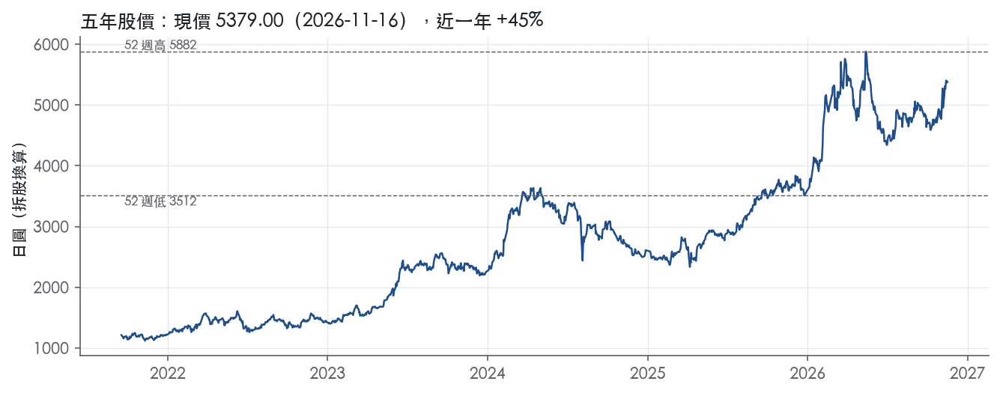

評等總表 › 未分類 › 8058.T
盈餘水位被高估，倍數回3年中位，看空｜評等 賣出｜目標價 4517
| 報告日 | 評等 | 目標價 | 當時股價 | 超額報酬 |
|---|---|---|---|---|
| 2026-11-16 | 賣出 | 4,517 | 5,379 | -21.7% |
| 評等 | 賣出 |
| 12 個月目標價 | 4517 日圓 |
| 現價 | 5379.00 日圓（2026-11-16） |
| 預期報酬 | 股價 -16.0%＋股息 2.2%＝總報酬 -13.8%；日股門檻 7.8%，超額 -21.7% |
| 估值方法 | P/E 15.0x，套在第 5–8 季的EPS（也就是一年後的未來四季） |
| 三情境 | 熊 2887／基準 4580／牛 6020 |
| 研究流程 | 四位研究員兩輪辯論＋研究總監裁決 |
| 資料來源 | EDINET、TDnet、J-Quants、Yahoo、FRED（全免費） |
盈餘水位被高估，倍數回3年中位，看空（研究總監裁決，四位研究員兩輪辯論後）
評等 賣出｜12 個月目標價 4517 日圓（總監三情境機率加權 4522 與研究員中位數 4512 各半）｜現價 5379.00（2026-11-16）
預期報酬：股價 -16.0%＋股息 2.2%＝總報酬 -13.8%。日股門檻 7.8%，超額 -21.7%。
估值方法：P/E 15.0x，套在第 5–8 季的EPS（也就是一年後的未來四季）。三情境：熊 2887（23%）／基準 4580（54%）／牛 6020（23%）。
什麼會讓研究總監改變看法：2027-05 FY2028期初計畫不低於FY2027實績且同步宣布500B以上買回，營益率回3.6%、股數-4%、倍數16x並轉中性；或綜合商社同業前瞻帶顯示類股整體在16x以上。
| 過去四季（實際，FY2027Q2） | 未來四季 | 第 5–8 季 | 第 9–12 季 | |
|---|---|---|---|---|
| 營收（B） | 20,688.6B | 21,723.0B | 22,157.5B | 22,822.2B |
| 營收成長 | 15.6% | 5.0% | 2.0% | 3.0% |
| 營業利益率 | 3.8% | 3.4% | 3.3% | 3.3% |
| EPS（日圓） | 286.65 | 299.30 | 305.36 | 318.09 |
| EPS 成長 | 63.6% | 4.4% | 2.0% | 4.2% |
| 每股股息（日圓） | — | 0.00 | 0.00 | 0.00 |
| P/E（現價） | 18.8x | 18.0x | 17.6x | 16.9x |
| 股息殖利率（現價） | 2.2% | — | — | — |
過去四季為申報數字；預測為研究總監的假設、程式計算。倍數與殖利率都用現價計算，用來看現價對應各期獲利的高低。
| 情境 | 機率（歷史） | 故事 | 未來四季營收成長 | 第 5–8 季營益率 | 倍數 | 目標價 | 股價漲跌 |
|---|---|---|---|---|---|---|---|
| 熊 | 23%（23%） | 美日一致下行路徑（GDP 0.3、銅11,800、WTI 95、日圓160）：持分法縮水、原料炭轉弱觸發MDP／AAS減損檢視，買回歸零，倍數回5y P50區間；對應風險表第1、2條 | -6.0% | 2.5% | 12.0x | 2887 | -46.3% |
| 基準 | 54%（53%） | FY2027實績略高於1,200.0B計畫但下半期一次性退場，FY2028期初計畫低於FY2027實績，回購低速，倍數回3年帶中位 | 5.0% | 3.3% | 15.0x | 4580 | -14.8% |
| 牛 | 23%（25%） | 本行基準總經（WTI 88、銅14,473、日圓153）下資產入替維持上半期步調、FY2028計畫不低於FY2027實績、2027-05宣布500B以上買回，市場維持現行前瞻倍數 | 11.0% | 3.9% | 16.5x | 6020 | 11.9% |
目標價由程式依研究總監的驅動與倍數計算；機率由研究總監給定。括號內是歷史頻率：把這檔股票過去十年 12 個月報酬的波動形狀，置中在基準情境，結果落在各情境附近的比例。

四位研究員用不同方法各自估值，回應研究總監的質疑後交出第二輪，最後由總監逐點裁決。各研究員的主張見第七章，裁決理由見第八章，完整論證見《研究底稿》。
| 立場（一輪→二輪） | 加權目標價（一輪→二輪） | 評等（一輪→二輪） | 第二輪倍數 | 熊～牛目標價 | |
|---|---|---|---|---|---|
| R1 成長與敘事 | 看空→看空 | 4890→4521 | 減碼→賣出 | 14.0x | 3318～6403 |
| R2 資本報酬與價值 | 看空→看空 | 3555→3618 | 賣出→賣出 | 12.5x | 2208～5364 |
| R3 盈餘品質與下檔 | 看空→看空 | 4703→4504 | 賣出→賣出 | 15.0x | 2887～6354 |
| R4 市場隱含預期 | 看空→看空 | 4596→4823 | 賣出→賣出 | 15.0x | 3544～6084 |
| 研究總監裁決 | 看空 | 4517 | 賣出 | 15.0x | 2887～6020 |
目標價由程式依各自的驅動與倍數計算；評等＝機率加權總報酬 − 日股門檻。
三菱商事是靠全球資產組合與交易網絡創造收益的綜合商社，橫跨能源、金屬資源、材料、基礎設施、汽車、食品與零售金融等領域，核心模式是直接投資上下游資產、整合供應鏈並從中賺取價差與股權收益，而不是單純的貿易仲介。公司以「取扱商品又はサービスの内容に応じて事業を複数の営業グループに区分」，由各事業部門及其直轄子公司（合併子公司833家、權益法適用公司349家）推動。FY2026（2026年3月期）全年營收18,915.99B日圓、年增1.6%、歸屬母公司淨利800.46B日圓、稀釋EPS 209.78日圓。LTM（至FY2027Q2，即2026年9月底為止12個月）營收20,688.58B日圓、稀釋EPS 286.65日圓、EBITA 782.80B日圓、自由現金流1,624.86B日圓，顯示近四個季度的擴張速度明顯快於FY2026全年水準。2026年11月16日股價5,379日圓、市值19,843.26B日圓、企業價值24,401.82B日圓。
公司在FY2027上半期決算短信中按六大營業群揭露收益與利潤：能源&電力解決方案、材料解決方案、金屬資源、社會基礎設施、汽車、食品產業，另有S.L.C.（零售流通與金融）群於有報另行列示。FY2027上半期（2026年4月至9月）各群收益：能源&電力解決方案2,048.21B日圓、材料解決方案1,775.41B日圓、金屬資源1,706.34B日圓、社會基礎設施407.80B日圓、汽車348.28B日圓、食品產業1,100.82B日圓；對應毛利分別為108.68B、102.69B、73.35B、87.34B、78.04B、139.30B日圓，顯示金屬資源與能源群以規模取勝、毛利率偏低，社會基礎設施與食品產業毛利率相對較高。歸屬母公司淨利方面，能源&電力解決方案102.64B日圓最大，依序為社會基礎設施42.90B、金屬資源41.58B、汽車38.72B、食品產業34.09B、材料解決方案20.10B日圓；資產合計（FY2026年3月底）能源&電力解決方案6,078.96B日圓、金屬資源5,995.23B日圓是兩大資本密集分部，材料解決方案1,971.36B、社會基礎設施2,173.80B、汽車1,942.72B、食品產業2,334.07B日圓。公司自FY2027起把原地球環境能源群與電力解決方案群整併為「エネルギー＆パワーソリューショングループ」，由FY2026的8群體制改為7群體制，理由是能源轉型期要跨商材、依地區構築彈性供應鏈。各群主要產品與代表子公司：能源群聚焦LNG、原油貿易與開發（CUTBANK DAWSON GAS RESOURCES、DIAMOND GAS HOLDINGS）；材料解決方案涵蓋化學品、塑膠、鋼鐵流通（三菱商事ケミカル、三菱商事プラスチック、メタルワン）；金屬資源聚焦原料炭與銅（三菱商事RtMジャパン、MITSUBISHI DEVELOPMENT、ANGLO AMERICAN系礦山權益）；社會基礎設施含不動產開發、數據中心、產業機械與工程（千代田化工建設、三菱商事都市開発、レンタルのニッケン）；汽車以東南亞經銷與融資為主（ISUZU UTE AUSTRALIA、DIPO STAR FINANCE、三菱自動車工業持股）；食品產業涵蓋穀物、水產養殖、畜產與食品流通（AGREX、CERMAQ、伊藤ハム米久ホールディングス、三菱食品）；整併前的電力解決方案群聚焦再生能源與燃氣發電（三菱商事エナジーソリューションズ、DIAMOND GENERATING系）；S.L.C.群涵蓋零售（ローソン）、物流與消費金融（三菱HCキャピタル、ロイヤリティマーケティング）。各分部毛利率的長期趨勢有報並未逐年揭露，僅提供單期數字。
三菱商事的客戶結構高度分散，橫跨B2B供應鏈夥伴、政府基礎設施採購方與終端消費者（透過ローソン等零售子公司）。公司在有報「股式保有狀況」中點名的政策保有股標的，反映其長期戰略夥伴與原料/產品雙向採購通路：いすゞ自動車（商用車夥伴）、日清食品ホールディングス（食品流通採購方）、AYALA（菲律賓合資夥伴）、SUMBER ALFARIA TRIJAYA（印尼零售通路）、THAI UNION GROUP（水產原料雙向供銷夥伴）、SAHA PATHANA INTER-HOLDING（泰國事業夥伴）等。地區布局上，公司在北美、歐洲、中國（上海）、香港、韓國、台灣、泰國、巴西、澳洲皆設有全資三菱商事地方法人（北米三菱商事会社、欧州三菱商事会社、三菱商事（上海）等），作為各地採購、銷售與專案執行據點。FY2026有報明確點出美國不動產、數據中心（美日雙地）、東南亞汽車市場（印尼、泰國等）、中國鋼材出口壓力對原料炭/化學品市況的外溢效應，是公司地區曝險最集中的幾塊。股東結構方面，日本マスタートラスト信託銀行（信託口）持股16.65%為最大股東，STATE STREET BANK AND TRUST COMPANY（常任代理人身分）持股10.91%，顯示機構與海外被動資金佔比高；2025年8月NATIONAL INDEMNITY COMPANY被認定為主要股東並提交臨時報告書。政策保有股（交叉持股）方面，FY2026出售12.2B日圓、較前期末餘額縮減約2%，董事會檢討結論指出「所期的保有意義已經稀薄化、多數標的將考慮縮減」，呼應東證對降低交叉持股、改善資本效率的要求。
過去四個申報季，公司營收與淨利呈現市況驅動的大幅波動、且年增率逐季擴大的型態。FY2026Q3（2025年12月底止）營收5,043.21B日圓、年增9.9%、淨利252.13B日圓、EPS 66.50日圓（資料包最近8季表）；FY2026Q4（2026年3月底止）營收5,234.95B日圓、年增12.0%、淨利192.54B日圓、EPS 51.90日圓，單季營運現金流轉強至951.40B日圓（資料包最近8季表）。FY2027Q1（2026年6月底止）營收5,181.00B日圓、年增22.8%、淨利298.52B日圓、EPS 81.08日圓（資料包最近8季表）；FY2027Q2（2026年9月底止）營收5,229.42B日圓、年增18.3%、淨利321.17B日圓、EPS 87.17日圓，營運現金流559.52B日圓，為近八季最高水準之一（資料包最近8季表）。對照最新一份決算短信（2026年11月4日公布，涵蓋FY2027上半期即2026年4月至9月），收益10,410.42B日圓，較前年同期8,637.84B日圓增加1,772.58B日圓，主因「市況上昇による增加」；銷管費用擴大至679.58B日圓（前期583.80B日圓），因日圓貶值換算影響及壞帳準備增加；有價證券損益從39.82B日圓擴大至104.95B日圓，主要是出售エム・シー・ヘルスケアホールディングス股份的獲利，以及千代田化工建設轉為權益法適用公司的重評價收益；權益法投資損益從236.85B日圓增至287.99B日圓，受銅價上漲及海外食品原料事業出售獲利推升。中間純利益（歸屬母公司）從355.80B日圓增至619.70B日圓。資產負債表上，非流動資產因美國頁岩氣事業新納入合併而增加約1,160.5B日圓，淨有息負債（不含租賃負債）較期初增加543.6B日圓至4,431.8B日圓。公司同時將FY2027全年業績預想上修：歸屬母公司淨利由1,100.0B日圓上修至1,200.0B日圓（增9.1%），營業收益現金流由1,250.0B日圓上修至1,380.0B日圓（增10.4%），理由是「能源&電力解決方案及金屬資源等セグメントでの増益を見込み」。
公司在FY2026有報的「経営戦略2027—総合力をエンジンに未来を創る—」中，將目標定義為「透過事業環境變化靈活發揮総合力、建構最適事業組合，實現持續成長與企業價值提升」。量化目標上，公司設定新的核心成長指標「營業收益現金流：平均成長率10%以上」，以及資本效率指標「ROE：FY2027達12%以上」。財務健全性上限設定「淨負債權益比0.6倍」，股東回報維持「累進配息＋機動性庫藏股買回」的基本方針。資金配置策略方面，公司將截至FY2027止三年的更新投資額從約1,000B日圓以上上修至約1,300B日圓以上，拓展/新規投資額從約3,000B日圓以上上修至約3,300B日圓以上，理由是「營業收益現金流表現穩健、投資回收加速、投資案件候補儲備充足」。公司將循環成長模式重新定義為「磨く（強化）」「變革する（重塑）」「創る（創造）」三個動作的組合，視之為中長期成長引擎。公司點名的分部成長驅動包括：能源&電力解決方案群整合後聚焦LNG中長期需求與燃氣火力作為電力安全供應的手段；金屬資源群看好銅因供給端限制及新興市場電動化需求維持緊俏；社會基礎設施群受惠美日數據中心擴張與AI需求帶動的市場成長；食品產業群透過Cermaq取得Grieg Seafood旗下鮭魚養殖事業擴大產能與供應穩定性。
整體而言，三菱商事FY2027上半期的淨利與現金流成長明顯快於FY2026全年水準，主要受能源與金屬資源市況回升、及千代田化工建設/美國頁岩氣等併購重估收益一次性推升，不是純粹的本業量擴張。公司FY2027全年指引（歸屬淨利1,200.0B日圓）隱含下半期淨利約580.3B日圓（1,200.0B減上半期619.70B日圓），若市況延續上半期強度，實際結果有上修空間，但千代田化工建設權益法重估收益與資產出售損益屬非經常性，下半期難以重複。交叉持股縮減（約2%）與庫藏股消卻（FY2027上半期消却自己股998.04B日圓）顯示公司積極回應東證資本效率要求，對股東回報面是正面訊號。

三菱商事沒有我們能放心給到 5 年以上的護城河。量化底稿顯示，ROIC 在有資料的 8 年中高於資本成本 0 年。公司確實有優勢，但集中在個別 LNG 專案與集團關係網，不足以把合併層級的報酬拉到資本成本之上。趨勢判為穩定、而非變窄。最新 ROIC 3.1% 低於十年平均 4.4%，但仍在 0.6%–7.4% 的歷史區間內。這反映的是市況循環，不是結構性失血。
三菱商事有兩類可以點名的優勢來源，但都只在局部事業成立，不是全公司層級的優勢。
無形資產（信用與集團關係）：公司自述，其「総合力」來自多元事業的全球布局，以及人才深度參與營運，藉此「建立信用與信賴，累積廣泛的產業知見與深刻洞察」。這套關係網有股權支撐。公司持有三菱重工業、三菱地所、日本郵船等股份，保有目的寫明是「創造事業機會，構築、維持、強化與該公司的交易與協業關係」。三菱重工業、東京海上ホールディングス、三菱電機三檔，則以保留議決權行使權限的みなし保有株式方式持有。需要政府、國營企業與長約買方背書的大型專案，入場券靠的就是這種信用。綜合商社以外的對手難以複製這種信用。
效率規模（LNG）：能源群的主要權益包括 BRUNEI LNG、CAMERON LNG HOLDINGS、JAPAN AUSTRALIA LNG (MIMI)、DIAMOND LNG CANADA。LNG 液化廠單廠投資巨大，買方多以長約鎖定，一個區域市場容納不了太多產能。因此先卡位的參與者具備效率規模的特性。
轉換成本、網路效應、成本優勢三類，我們在原文找不到證據，不列入。
數字上看不到：量化底稿沒有任何一項指標支持寬或窄護城河。ROIC 十年平均 4.4%、最高 7.4%，資本成本代理值 10.1%，平均利差 -5.7%，8 年中高於資本成本 0 年。利潤率也談不上穩定。毛利率十年平均 13.0%、標準差 4.4%，最新 8.7% 正是十年最低；營業利益率十年平均 3.8%、標準差 1.6%。
這組數字有兩個口徑問題，要先講清楚。
第一，公司有持分法適用會社 349 社。權益法損益不計入營業利益，因此以營業利益為基礎的 ROIC 會系統性低估本業報酬。ROE 十年平均 10.6%、標準差 3.4%，是比較公平的檢驗。
第二，資本成本代理值用的是美國 10 年債。若改看日本 10 年公債殖利率 2.841%，門檻會明顯降低。
即使兩點都往有利公司的方向修正，結論仍不變。ROE 十年最低 3.2%、最高 15.8%，擺盪幅度大，低點遠低於任何合理門檻。十年平均也低於公司自訂的「2027 年度 ROE 12% 以上」目標。我們無法有把握說未來 5 年報酬都能站在資本成本之上，因此評級維持「無」。
最大的侵蝕力量是：盈餘仍由商品價格決定，而公司是價格接受者。有報寫明，銅價受美國關稅政策、大型礦山相繼發生生產障礙、美國降息預期等因素驅動。原料炭市況則受中國鋼材出口，以及天候造成的供給限制左右。材料群面對「以中國內需低迷為背景的過剩出口持續，各種素材市況走軟」。汽車群在東協碰上「競爭各社圍繞有購買力的顧客，降價競爭激化」。
關係網本身也在收縮。董事會檢討政策保有株後，確認「所期保有意義已稀薄化、將檢討縮減的銘柄為數眾多」。縮減交叉持股對資本效率是正面的。但它同時削弱靠持股維繫的交易關係，無形資產這一條會跟著變薄。
政策風險同樣存在。美國減稅與歲出法通過後，部分變更了《降低通膨法》下再生能源的稅額抵減要件。這顯示政策型專案的報酬隨時可能被改寫。
目標倍數相對綜合商社同業應持平、不給溢價，並應假設倍數會向自身歷史中位數回歸。現在 P/E 18.8x，位於五年分位 79.0%，遠高於五年中位數 11.8x。這個位置反映的是銅與能源市況上行，不是可持續的超額報酬；在 ROIC 長期低於資本成本的前提下，倍數高於歷史中位的期間不應假設超過一個商品循環。
| 指標 | 最新 | 十年平均 | 標準差 | 最低 | 最高 |
|---|---|---|---|---|---|
| ROIC | 3.1% | 4.4% | 1.9% | 0.6% | 7.4% |
| 毛利率 | 8.7% | 13.0% | 4.4% | 8.7% | 24.9% |
| 營業利益率 | 2.5% | 3.8% | 1.6% | 0.7% | 6.3% |
| FCF 利潤率 | 6.0% | 4.9% | 1.5% | 2.1% | 6.8% |
| ROE | 8.5% | 10.6% | 3.4% | 3.2% | 15.8% |
程式計算。資本成本代理值（10 年債＋5%）：10.1%；ROIC 平均減資本成本：-5.7%；ROIC 有資料的 8 年中，高於資本成本 0 年。
三菱商事 LTM 營業現金流／淨利 1.93x、FCF／淨利 1.53x，十年平均亦維持 1.90x／1.29x，長期盈餘有現金支撐。但應計比率 LTM -4.1%、三年均 -2.6%，均低於 0 門檻，顯示盈餘並非靠應計堆出來。利息保障倍數 LTM 3.71x 落在黃燈區，且遠低於十年平均 6.93x，反映近期槓桿上升、利息費用增加。整體屬於「現金品質長期穩健、短期槓桿與單季 FCF 轉負需要解釋」的中品質個案。
年度層級現金完全跟上盈餘：FY2026 CFO 1,490.04B 對淨利 800.46B，FCF 1,137.09B（量化底稿年度表）。但半年期（2026/4-9）出現逆轉：自由現金流從前中間期正 229.2B 日圓轉為負 136.7B 日圓，主因是投資活動現金流出從 -198.8B 日圓擴大到 -1,128.0B 日圓，其中「米國シェールガス事業の株式取得や千代田化工建設持分法適用會社化に伴う現預金の減少」是主因。這是併購與新投資導致的現金流出，不是本業獲利能力惡化，營業活動現金流本身反而從 428.0B 日圓增加到 991.3B 日圓。所以半年 FCF 轉負屬於資本支出／併購時點問題，不是盈餘品質紅旗。
三菱商事不揭露美式非 GAAP 調整項（SBC 加回、Non-GAAP EPS 等），但損益表本身含有數個一次性項目需要拆解。FY2026 有價證券損益從前期 305.6B 日圓驟降到 41.8B 日圓，公司解釋前期含「ローソン持分法適用會社化に伴う再評価益」的一次性收益、當期無此項。固定資産除・売却損益從前期 +134.6B 日圓轉為當期 -9.3B 日圓，主因前期有「豪州原料炭事業における有形固定資産の売却益」的反動。持分法投資損益則從 337.5B 日圓增加到 467.9B 日圓，含「銅事業における過年度計上した減損損失の一部戻入」此類會計估計回沖。這些都是損益表內的一次性波動，真正代表持續獲利能力的是營業收益キャッシュ・フロー（公司自定的持續稼ぐ力指標），FY2026 為 1,048.1B 日圓，較前期 983.7B 日圓成長；半年期同指標從 446.3B 日圓增至 728.1B 日圓，估值應優先參考此一指標而非含一次性評價損益的淨利。
槓桿正在上升但仍在可控範圍。淨有息負債從 FY2025 年底 3,047.2B 日圓增加到 FY2026 年底 3,888.2B 日圓，半年後再增至 4,431.8B 日圓，與快照 4,558.57B 日圓方向一致。長期資金比率從 77% 升到 79%、流動比率從 149% 降到 141%，仍屬穩健區間。信用評等維持 R&I AA／Moody's A2／S&P A，展望皆為穩定。股東回饋方面，（股利＋回購）／淨利 LTM 38.4%、三年均 39.1%，低於 50% 綠燈門檻但非負值，FY2026 自己股式消却達 998,043M 日圓、顯示大額庫藏股已實際註銷而非僅帳上停留，符合東證對資本效率與 PBR 改善的要求。全年業績予想（業績予想）在 2026-11-04 上修，歸屬淨利從 1,100.0B 日圓上修至 1,200.0B 日圓（+100.0B，+9.1%），營業收益キャッシュ・フロー從 1,250.0B 日圓上修至 1,380.0B 日圓（+130.0B，+10.4%），理由是能源與金屬資源市況走強；對照現行 LTM EPS 286.65，公司全年 EPS 計畫 330.43 日圓隱含下半年動能延續，若市況反轉將有下修風險。
利息保障倍數黃燈（LTM 3.71x，十年均 6.93x）：真實但可解釋的槓桿上升，非盈餘灌水問題。淨有息負債半年內從 3,888.2B 日圓升至 4,431.8B 日圓，主因長期借入金與社債增加以支應米國シェールガス事業新規連結與千代田化工建設持分法適用會社化等併購，金融費用同步從半年 81.8B 日圓增至 114.5B 日圓。這是資本配置選擇（舉債擴張能源與工程資產），不是本業獲利力下滑，但確實壓縮利息覆蓋緩衝。
稀釋股數年變動黃燈（LTM 0.0%、三年均 -4.6%）：非紅旗，是庫藏股買回放緩的訊號而非惡化。三年持續減少股數（十年均 -2.4%）顯示長期回購政策落實，FY2026 自己股式消却 998,043M 日圓為實際註銷；LTM 走平僅反映本期回購步調暫緩，不構成稀釋風險。
（股利＋回購）／淨利黃燈（LTM 38.4%，低於 50% 綠燈但未達紅燈）：可解釋，公司明確採「累進配當」加機動回購的政策方向，比率偏低是因為當期淨利基期較高（FY2026 淨利 800.46B）且公司將部分資金留供米國シェールガス事業等新投資，不是股東回饋意願下降。
應計比率、現金轉換、SBC 燈號均正常或缺資料：SBC／營收與淨負債／EBITDA 兩項無資料可評，不構成紅旗，但也意味無法用程式口徑驗證股權薪酬稀釋成本，估值時應留意股份報酬相關資本公積變動（FY2026 中間期資本剰余金因「株式報酬に伴う報酬費用」變動 2,549M 日圓，規模不大）。
估值應以 GAAP 淨利為主軸，但須扣除有價證券損益、固定資産除・売却損益等非經常項目後再比較跨期成長，因為 FY2025 的高基期主要來自ローソン持分法再評価等一次性收益，FY2026 的下滑有相當部分是反動效應而非本業衰退。考慮到利息保障倍數已降至黃燈且槓桿仍在上升軌道（淨負債十年內首次站上 4,000B 日圓量級），建議在估值倍數上不給滿倍，對 EV/EBITA 等槓桿敏感倍數打七至八折反映財務彈性收窄的風險。盈餘本身不需要大幅打折，因為現金轉換長期健康、應計比率為負，真正要留意的是半年期 FCF 轉負與舉債擴張节奏是否持續，而非盈餘造假或口徑操縱的問題。
| 項目 | LTM | 近三年 | 十年 | 燈號 | 規則 |
|---|---|---|---|---|---|
| 營業現金流／淨利 | 1.93x | 1.67x | 1.90x | 綠 | ≥1.00x 綠、<0.80x 紅 |
| 自由現金流／淨利 | 1.53x | 1.21x | 1.29x | 綠 | ≥0.90x 綠、<0.60x 紅 |
| 應計比率（(淨利−CFO)／平均總資產） | -4.1% | -2.6% | -2.2% | 綠 | ≤0.0% 綠、>5.0% 紅 |
| SBC／營收 | — | — | — | — | ≤3.0% 綠、>8.0% 紅 |
| 淨負債／EBITDA | — | — | — | — | ≤1.50x 綠、>3.00x 紅 |
| 利息保障倍數（營業利益／利息） | 3.71x | 4.03x | 6.93x | 黃 | ≥8.00x 綠、<3.00x 紅 |
| 稀釋股數年變動 | 0.0% | -4.6% | -2.4% | 黃 | ≤0.0% 綠、>3.0% 紅 |
| （股利＋回購）／淨利 | 38.4% | 39.1% | 41.3% | 黃 | ≥50.0% 綠、<0.0% 紅 |
程式計算；燈號以 LTM（無則近三年平均）判定。
| 風險 | 觸發指標（看什麼數字、在哪裡看） | 對 EPS 的影響方向與粗略幅度 | 未來 12 個月發生機率（高／中／低） | 出處 |
|---|---|---|---|---|
| 1. 商品市況風險（原油／LNG／銅／原料炭） | Brent 原油價、LNG spot 價（百萬Btu）、銅價（每磅／每噸）、每季決算短信中「持分法による投資損益」增減理由 | 原油每桶變動1日圓，年淨利變動約2.4B日圓；銅每噸變動100日圓，年淨利變動約2.6B日圓（每磅0.1日圓變動約5.6B日圓）。FY2027上半期持分法投資損益已從236.85B增至287.99B日圓，主因銅價上漲 | 高 | |
| 2. 重要投資案件（持分法／固定資產）減損風險 | 年度有報「重要な投資案件」帳面價值變動、減損測試結果、中長期商品價格假設下修公告 | 方向：下行，幅度大。曝險規模：MDP社（原料炭）有形固定資產帳面1,160.6B日圓；Anglo American Sur（銅）帳面216.5B日圓；Quellaveco（銅）投資及融資帳面523.5B日圓；CDGR社（頁岩氣）有形固定資產帳面284.0B日圓；Diamond LNG Canada有形固定資產428.7B日圓、使用權資產236.4B日圓；Eneco商譽167.0B日圓 | 中 | |
| 3. 匯率風險（日圓／日圓） | 日圓兌日圓匯率水準、公司全年業績予想中的「想定為替レート」與現行匯率差距 | 日圓兌日圓每變動1日圓，年淨利變動約5.0B日圓。現行匯率158.23處於日圓偏弱區間，若轉向升值對淨利為負向 | 中 | |
| 4. 信用風險（取引先信用惡化、貸倒引当金） | 決算短信「販売費及び一般管理費」中貸倒引当金增減理由、B/S「引当金」科目金額 | 方向：下行，幅度中。FY2027上半期銷管費用從583.80B增至679.58B日圓，部分因「貸倒引当金の增加」；非流動負債「引当金」自386.80B增至446.74B日圓（bs資料） | 中 | |
| 5. 股票市場風險（政策保有股／年金資產評價） | 政策保有股市值與評價益公告（有報「株式の保有状況」）、TOPIX 水準 | 方向：下行，幅度中。公司持有市場性股票帳面1,440.6B日圓（時價），其中含評價益348.6B日圓，股價下跌會壓縮此評價益並影響企業年金資產 | 低 |
商品市況風險排第一，因為它同時透過交易利差、持分法投資損益、固定資產減損三個管道影響淨利，且FY2027上半期的淨利暴增已經是這個風險兌現的正面版本。原油（Brent）FY2026年度在每桶60日圓前半到70日圓前半區間震盪，但近期受中東情勢影響波動劇烈；LNG spot價格2026年3月因荷姆茲海峽封鎖風險與卡達LNG戰爭損害，一度衝上每百萬Btu 20日圓以上。這代表價格區間本身極不穩定，監測者應每月看Brent與LNG spot，而非只看公司guidance。
重要投資案件減損風險排第二，因為這些資產帳面規模巨大且評價高度依賴「中長期商品價格見通し」而非短期價格。Anglo American Sur在FY2026已經發生過53.2B等級的減損戻入，顯示這條線歷史上雙向都動過。一旦公司在年度有報下修任何一項中長期價格假設，這些帳面值就有重估風險。
匯率風險排第三，因為三菱商事的海外收益（配當金、海外子公司權益損益）換算成日圓後對匯率線性敏感，且FY2027上半期銷管費用擴大的理由之一就是「円安に伴う為替換算の影響」，證明匯率已經在影響損益表，而非只是風險章的假設性描述。現行日圓兌日圓158.23處於近年偏弱水準，若日圓轉向升值趨勢，過去靠日圓貶值墊高的換算收益會反轉為拖累。
信用風險排第四，FY2027上半期貸倒引当金增加已經實際壓縮了銷管費用，顯示這不是抽象條款，而是正在發生的成本項目。三菱商事對取引先的信用供與（賣掛金、融資、保證）規模龐大，一旦有大型取引先或海外事業所在國信用惡化，債權回收不能會直接衝擊淨利。
股票市場風險排第五，因為持有市場性股票規模（1,440.6B日圓）雖大，但評價益（348.6B日圓）只是帳上未實現部分，股價下跌對已實現現金流的影響相對間接，且公司已在縮減政策保有股規模、降低這塊曝險。
FY2027上半期淨利年增近一倍，相當大一部分來自千代田化工建設轉為權益法適用公司的重評價益、エム・シー・ヘルスケアホールディングス股份出售益、以及海外食品原料事業出售損益等一次性項目，這些項目下半期難以重複，若投資人把上半期年化當成常態盈餘水準，會高估全年EPS的可持續性。
美國頁岩氣事業（CDGR社相關）在FY2027上半期新納入合併，帶動非流動資產增加約1,160.5B日圓、淨有息負債（不含租賃）較期初增加543.6B日圓至4,431.8B日圓，這代表公司的槓桿與利率敏感度正在上升，但有報風險章僅泛稱「金利リスク」而未點名此次併購對資產負債表結構的具體拉動，熊市情境應把這條新增負債規模與利率上行情境連動檢視。
現價 5379.00 對應 trailing（過去四季）P/E 18.8x、EV/EBITDA —、EV/EBITA 31.2x、EV/Sales 1.2x、FCF 殖利率 8.2%。主要估值倍數 P/E 現在 18.8x，落在5 年區間第 79 百分位（P10／P50／P90 = 5.3x／11.8x／21.9x）。

把程式的機械基準預測放到現價下，市場付的前瞻倍數是：P/E（未來四季） 16.1x、P/E（第 5–8 季） 14.6x。反推 DCF 顯示市價隱含未來五年營收年成長 42.5%（WACC 9.0%、終值成長 3.0%、FCF 利潤率 0.8%，SBC 不加回）。
| 倍數 | 現在 | 5 年 P10 | 5 年 P50 | 5 年 P90 | 現在分位 | 全期 P50 |
|---|---|---|---|---|---|---|
| P/E | 18.8x | 5.3x | 11.8x | 21.9x | 79.0% | 10.0x |
| EV/EBITA | 31.1x | 8.8x | 20.3x | 45.1x | 77.1% | 20.2x |
| EV/EBIT | 31.1x | 8.8x | 20.3x | 46.1x | 74.0% | 20.2x |
| EV/Sales | 1.2x | 0.5x | 0.7x | 1.1x | 92.4% | 0.7x |
| P/S | 1.0x | 0.3x | 0.6x | 0.9x | 92.4% | 0.5x |
| P/FCF | 12.2x | 5.1x | 13.5x | 17.5x | 41.2% | 11.5x |
trailing 倍數（股價 ÷ 過去四季）；分位以每個交易日計算。
（日股同業籃尚未建置：評等門檻用日股絕對門檻＝日本 10 年公債＋股權風險溢酬 5%，見首頁。）
事後實現前瞻倍數帶（P/E，2018-11-21..2025-11-19）：P10／P50／P90 = 4.3x／9.0x／13.6x。它是每個交易日的股價除以之後四季實際實現的指標；一年後，今天的第 5–8 季正是那時的未來四季，所以這條帶是 12 個月目標價的同口徑倍數。因為用的是事後實際而非當時預期，過去成長超乎預期的公司這條帶會偏低。
程式的機械基準（成長率從過去四季年增率三年收斂到 6%、利潤率持平）用 事後實現前瞻 P/E P50 估值得到 3310（-38.5%），市場現行前瞻倍數（現價 ÷ 基準 未來四季指標）一年後持平，套在基準 第 5–8 季指標得到 5957。這兩個數字只是參考點，不是本報告的目標價；研究員對這個定價的回應在第七章。
下表是每位研究員第一輪（各自獨立）與第二輪（回應研究總監的質疑後）的結果。目標價全由程式依各自的假設計算。
| 立場（一輪→二輪） | 加權目標價（一輪→二輪） | 評等（一輪→二輪） | 第二輪倍數 | 熊～牛目標價 | |
|---|---|---|---|---|---|
| R1 成長與敘事 | 看空→看空 | 4890→4521 | 減碼→賣出 | 14.0x | 3318～6403 |
| R2 資本報酬與價值 | 看空→看空 | 3555→3618 | 賣出→賣出 | 12.5x | 2208～5364 |
| R3 盈餘品質與下檔 | 看空→看空 | 4703→4504 | 賣出→賣出 | 15.0x | 2887～6354 |
| R4 市場隱含預期 | 看空→看空 | 4596→4823 | 賣出→賣出 | 15.0x | 3544～6084 |
| 研究總監裁決 | 看空 | 4517 | 賣出 | 15.0x | 2887～6020 |
目標價由程式依各自的驅動與倍數計算；評等＝機率加權總報酬 − 日股門檻。
分歧度：第一輪 加權目標價 3555～4890（區間＝現價的 25%）· 倍數 12～16x · 立場 看空×4（方向一致）；第二輪 加權目標價 3618～4823（區間＝現價的 22%）· 倍數 12.5～15x · 立場 看空×4（方向一致）。

| 研究員 | 第二輪主張 | 堅持的理由 |
|---|---|---|
| R1 成長與敘事 | 偏空，倍數 14 倍，錨在五年中位 11.8 倍加資本紀律溢價。 | 一次性收益不重複，FY2028 上半期淨利不超過 580B。 |
| R2 資本報酬與價值 | 偏空，倍數 12.5 倍，略高於事後前瞻倍數的 75% 分位 12.2 倍。 | 回購已暫停、盈餘在商品高點，倍數不給到 13.6 倍。 |
| R3 盈餘品質與下檔 | 偏空，倍數 15 倍，對照 3 年中位 14.8 倍，常態營益率 3.1%。 | 盈餘是真的，看空來自盈餘水位；FY2027 淨利約 1,130B。 |
| R4 市場隱含預期 | 偏空，倍數 15 倍，低於市場持平的 16.1 倍。 | 市場把含一次性收益的計畫當常態，FY2028 計畫會低於 1,200.0B。 |
每位研究員的逐條回應與完整論證見《研究底稿》（8058.T_研究底稿_2026-11-16.docx）。
| 分歧點 | R1 | R2 | R3 | R4 | 什麼資料會分出勝負 |
|---|---|---|---|---|---|
| 目標倍數與口徑 | 14x eps@ntm；錨 5y P50 11.8x＋資本紀律溢價 | 12.5x eps@q5_q8；錨事後前瞻帶 P75 12.2x 略上 | 15.0x eps@q5_q8；以 3y trailing P50 14.8x 交叉驗證 | 15x eps@q5_q8；低於市場持平 16.1x，因計畫含一次性 | 2027-05 FY2028 業績予想與買回公告；綜合商社同業前瞻帶（尚未建置） |
| 常態營益率（一次性剔除） | 3.8%／3.4%／3.5%，y1 回到基準 | 3.3%／3.1%／3.1% | 3.1%／3.2%／3.3%；扣除額假設約 150B | 3.5%／3.5%／3.5% | FY2027Q3 單季淨利（2027-02）；FY2027 下半期有価証券損益（2027-05） |
| NTM 營收成長 | 7% | 6% | 5% | 8%，頁岩氣併表整年 | FY2027Q3 收益年增率（2027-02） |
| 股數年變動 | -2.5% | -2%，回購實質暫停 | -2%，投資優先 | -3% | 2027-05 決算同步公告的買回金額 |
倍數：選 R3（15.0x，eps@q5_q8）。 四人都在市場持平 16.1x 之下，差別在壓多少、憑什麼。R2 的錨是事後實現前瞻帶 P75 12.2x，但這條帶的定義自己寫明成長期會偏低，而 2018–2025 窗口正好涵蓋 FY2022–23 盈餘跳升與東證改革前的低倍數期；R2 第二輪承認日圓口徑 ROE 十年平均 10.6% 高於 7.8% 股權成本，等於撤掉「不過 P75」的主要理由，剩下的回購暫停與高點盈餘我分別放進股數與營益率，再壓倍數是重複計價（R2 第一輪用日本長端利率壓倍數，第二輪已刪，不再追究）。R1 的 14x 套在 ntm 指標上，程式對照它相對 trailing 持平倍數 18.8x 是 -25%，是四人中最深的去評價，而它的錨 5y P50 11.8x 含 2021–22 改革前區間，不是現在的制度。R3 用 3y 帶 P50 14.8x 交叉驗證，並指出 1y 帶 P10 19.7x 是 FY2026 EPS 209.78被前期一次性反動壓低的分母效應，是四份裡最完整的錨說明；R4 從另一端（市場對公司計畫 EPS 330.43 付 16 倍以上）得到同一數字。15x 比 16.1x 低 7%，理由是個股的：trailing 18.8x 在 3y 帶 63.6% 分位、回購暫停、槓桿餘裕正用於頁岩氣，倍數回到改革後 3 年帶中位是制度內回歸，與利率無關。分勝負的是 2027-05 的 FY2028 業績予想與尚未建置的商社同業帶，後者若顯示類股整體在 16x 以上，我上調。
常態營益率：own，3.4%／3.3%／3.3%（假設）。 方法選 R3：上半期有価証券損益 104.95B（前期 39.82B）、固定資產除売却損益 16.71B、その他の損益 32.47B（為替差損益）、持分法內的海外食品原料出售益（未揭露）。這些項目在程式架構裡落在營業利益率線上，而非持平的 670.7B 營業外（那是金融收支與持分法損益的 LTM 總額），所以只能用營益率代扣，R3 扣約 150B 得 3.1% 的做法方向對。我不照單全收有三個理由。一，R3 把 FY2026 全年 41.8B 當常態資產入替水位，但那是緊接 FY2025 305.6B ローソン再評價益之後的谷底年；三年 3,300B 以上的拓展投資與短信那一長串「売却及び回収」顯示入替是常態業務，常態水位高於 41.8B，扣除額應小於 150B。二，記分表：R2 營業利益誤差中位 -4.8%、R3 -3.3%、機械基準 -4.4%、我自己 -2.4%，全部系統性偏低；唯一不偏的 R4（+0.2%）給 3.5%。三，R4 只扣 0.3 個百分點，小於它在 E1 承認的項目規模；R1 的 y1 3.8% 等於不扣，和 R1 自己「一次性不重複」的主張 3 矛盾。y1 給 3.4%：下半期油價現價仍高於本行 88 的路徑，且公司上修計畫時已看見 H2 入替管線；y2、y3 3.3%：依敏感度（原油 1 日圓 2.4B、日圓 1 円 5.0B），油價走向 88、日圓走向 153 是數十 B 量級的逆風，頁岩氣與 LNG Canada 量能部分抵銷。這不是取平均，是 R3 的方法配較高的常態入替水位。
NTM 營收成長：選 R3（5%）。 關鍵事實是四個 LTM 季度收益已是 5,043.21B／5,234.95B／5,181.00B／5,229.42B（–FY2027Q2），12.4% 的基準只是 FY2026 上半期 4,218.71B、4,419.14B 低基期造成的年增率假象。R4 把 y1 從 4% 拉到 8% 的理由是頁岩氣併表整年，但沒估增量，而千代田去合併已完成（前受金 334.99B→110.82B）、日圓走向 153 都是減項；R1 的 7% 同樣沒處理起點已在高位。5% 保留現貨油價高於上半期均價與量能的空間。
股數年變動：選 R1（-2.5%）。 R2 的證據成立：上半期自己株式取得 9M，前年同期 599.63B，NTM 內近乎零。但 R2、R3 的 -2% 等於假設 Q5–Q8 也不恢復；淨有息負債 4,431.8B 對歸屬持分 9,795.65B仍在公司 0.6 倍上限內，「機動性買回」方針未改，頁岩氣消化後恢復是較可能路徑；R4 的 -3% 假設恢復更早，沒有證據。-2.5% 是暫停與恢復的分段結果。
漂移退回與總經偏離。 R1 的倍數 16x→14x：G3 要的是溢價的方法，R1 答「證據撐不起 35% 溢價」後直接換成 19% 溢價，沒有新錨、沒有新證據，向中位數靠攏 74%，列入 drift_rejections，以其第一輪 16x@ntm 看待；R1 的營益率回調與機率修正有證據，接受。其餘三人變動在 5% 內，不退回。四人 macro_deviations 皆為空，牛情境都改用本行基準路徑、熊情境改用美日一致下行路徑（WTI 95、銅 11,800、日圓 160），我接受，最終 macro_deviations 為 []。
與機械基準不同的驅動：rev_growth 5%／2%／3%（基準 12.4%／9.2%／6.0%；y2、y3 取 R2–R4 一致的 2%／3%，基準的線性收斂隱含商品價格再漲一輪，本行前提沒有）；op_margin 3.4%／3.3%／3.3%（基準 3.8% 持平，理由如上）；da_pct_rev 2.6%（R2 依上半期減価償却費等 272.16B 推算，基準 0% 低估 FCF）；capex_pct_rev 2.5%（基準 2.1%；三年更新投資上修至 1,300B 以上，取 R3／R4）；share_change_pct -2.5%（基準 -5.0%）；稅率沿用 22.8%。
目標倍數 15.0x，metric eps，horizon q5_q8。錨是 3y trailing P/E 帶 P50 14.8x，即 2023 年後東證改革、累進配息、National Indemnity 2025-08 成為主要股東的制度期中位。口徑上，trailing 帶配一年後的 LTM（今天的 ntm），而 Q5–Q8 EPS 因股數縮減略高於 NTM，所以 15x@q5_q8 的 trailing 等價倍數略高於 15x，仍在 3y P50 附近；對市場持平 16.1x 低 7%，高於事後前瞻帶 P90 13.6x，後者偏低已由帶的定義說明。R2 的 P/FCF 交叉驗證（5y 分位 41.2%）方向對我們不利，但我接受 R2 的解釋：程式 FCF 不含股權投資與併購，上半期 FCF 已轉負 -136.7B，8.2% FCF 殖利率不是可分配殖利率，只列上限參考。同業：日股綜合商社籃尚未建置，倍數不含同業溢折價，列為缺口。
機率從歷史基準率出發，不是慣例：牛（6,083.73）與熊（2,886.75）對基準（約 4,473.59）的距離兩側大致相當。程式對 R3（+42%／-35%）的對照是 19%／58%／23%，對 R4（+26%／-27%）是 29%／44%／27%，我的距離落在兩者之間；置中分布 ≥+10%／≥+20% 的頻率是 33%／18%，≤-10%／≤-20% 是 31%／23%，兩側半距讀出來都在 20–25%。取 23／54／23：不加本研究部慣用的熊溢價——R1–R3 第一輪多給熊的「銅在頂端」已在 y2 營收 2% 與營益率反映，重複計算第二輪已刪；也不加人為的牛溢價——公司計畫保守與 National Indemnity 錨定股東，被銅在第 100 百分位風險偏下、回購暫停抵銷。與歷史頻率差距在 3 個百分點內。
市場以 16.1x 付基準 NTM EPS 333.39，也就是對含上半期一次性收益的公司計畫 EPS 330.43 付 16 倍以上（R4 E2）；我們的差距大半在盈餘、小半在倍數：盈餘差在營益率 3.3% 對基準 3.8%（一次性入替益與高點商品價格不能持平外推）與股數 -2.5% 對 -5.0%（回購暫停），倍數差在 15x 對 16.1x（制度內回歸 3 年帶中位）。立場看空；評等由程式依「機率加權總報酬 − 7.8% 絕對門檻」決定，R3、R4 相近假設下均為賣出，我的結果應一致。注意門檻是 JGB 加 5% 的絕對門檻，不是同業籃，若同業籃建置後隱含報酬更低，評等可能鬆動，但立場不變。
現價 5379.00 → 點估目標價 4580 → 機率加權目標價 4522 → 目標價 4517，差距拆成五段：成長順延 +578 日圓（市場現行倍數 16.1x 一年後持平、獲利照機械基準）；倍數差 -419 日圓（總監倍數 15.0x vs 市場持平倍數 16.1x，同一機械基準預測）；盈餘差 -958 日圓（總監預測的第 5–8 季EPS 0.0B vs 機械基準 0.0B，同一倍數）；情境不對稱 -58 日圓（機率加權減點估）；研究小組平均 -5 日圓（總監機率加權 4522 與研究員第二輪中位數 4512 各半）。各段相加等於目標價減現價。本階段未接賣方共識，差距以市場隱含預期為對照。
| 驅動 | 機械基準 | 研究總監 | 差異 |
|---|---|---|---|
| 未來四季營收成長 | 12.4% | 5.0% | -7.4 pp |
| 第 5–8 季營收成長 | 9.2% | 2.0% | -7.2 pp |
| 第 9–12 季營收成長 | 6.0% | 3.0% | -3.0 pp |
| 未來四季營益率 | 3.8% | 3.4% | -0.4 pp |
| 第 5–8 季營益率 | 3.8% | 3.3% | -0.5 pp |
| 第 9–12 季營益率 | 3.8% | 3.3% | -0.5 pp |
| D&A／營收 | 0.0% | 2.6% | +2.6 pp |
| 資本支出／營收 | 2.1% | 2.5% | +0.4 pp |
| SBC／營收 | 0.0% | 0.0% | ＝ |
| 稅率 | 22.8% | 22.8% | ＝ |
| 股數年變動 | -5.0% | -2.5% | +2.5 pp |
研究總監只寫偏移，未寫的沿用基準。
| 期 | 營收 | 成長 | 營益率 | 營業利益 | EBITDA | EBITA | 淨利 | EPS | FCF | 期末淨負債 |
|---|---|---|---|---|---|---|---|---|---|---|
| 未來四季 | 21,723.0B | 5.0% | 3.4% | 738.6B | 1,303.4B | 738.6B | 1,088.5B | 299.30 | 1,110.2B | 3,856.8B |
| 第 5–8 季 | 22,157.5B | 2.0% | 3.3% | 731.2B | 1,307.3B | 731.2B | 1,082.8B | 305.36 | 1,105.0B | 3,160.3B |
| 第 9–12 季 | 22,822.2B | 3.0% | 3.3% | 753.1B | 1,346.5B | 753.1B | 1,099.7B | 318.09 | 1,122.6B | 2,446.2B |
程式依上表的驅動計算；季度用最近四季季節性分攤；不含營運資金變動。
估值方法：P/E 15.0x，套在第 5–8 季的EPS（也就是一年後的未來四季）。研究總監目標倍數的錨：3 年 trailing P/E帶P50 14.8x（2023年後東證改革、累進配息、National Indemnity 2025-08入股的制度期中位）；對市場持平16.1x低7%屬制度內回歸，高於事後前瞻帶P90 13.6x因該帶定義偏低；無同業籃，不含同業溢折價。
計算：EPS（第 5–8 季） 305.36 × 15.0x → 點估目標價 4580（-14.8%）；隱含 P/E（未來四季）15.3x、P/E（第 5–8 季）15.0x、EV/EBITDA（第 5–8 季）15.2x、FCF 殖利率（第 5–8 季）6.9%。
總監三情境機率加權目標價 4522，研究員第二輪中位數 4512，兩者各半＝目標價 4517；預期報酬 股價 -16.0%＋股息 2.2%＝總報酬 -13.8%；減評等門檻 7.8%（日股絕對門檻 7.8%（日本 10 年公債 2.84%（2026-11-12）＋股權風險溢酬 5%；日股同業籃尚未建置））＝超額報酬 -21.7% → 評等 賣出（超額 >+15% 買進、+5～+15% 加碼、±5% 中立、−5～−15% 減碼、<−15% 賣出）。同一份資料重開研究小組，超額約有正負四個百分點的雜訊（一個標準差，二十檔實測）；以此估計，評等落在其他級距的機率不到一成。
| 情境 | 機率 | 未來四季成長 | 第 5–8 季成長 | 第 5–8 季營益率 | EPS（第 5–8 季） | 倍數 | 目標價 |
|---|---|---|---|---|---|---|---|
| 熊 | 23% | -6.0% | -2.0% | 2.5% | 240.56 | 12.0x | 2887 |
| 基準 | 54% | 5.0% | 2.0% | 3.3% | 305.36 | 15.0x | 4580 |
| 牛 | 23% | 11.0% | 5.0% | 3.9% | 364.87 | 16.5x | 6020 |
| 主張 | 驗證日 | 看哪個數字 | 門檻 |
|---|---|---|---|
| FY2028期初業績予想歸屬淨利低於FY2027實績 | 2027-05-15 | 決算短信 FY2028業績予想 当社の所有者に帰属する当期利益 對 FY2027實績 | 予想 < 實績 |
| FY2027實績歸屬淨利不顯著超過計畫，且下半期有価証券損益回到常態 | 2027-05-15 | FY2027 当社の所有者に帰属する当期利益；有価証券損益（通期減中間期） | 淨利 ≤1,280B 且 有価証券損益 <60B |
| FY2027全年自己株式取得維持低速 | 2027-05-15 | 持分変動計算書 自己株式 取得及び処分－純額 絕對值 | ≤300B |
| FY2028上半期歸屬淨利低於FY2027上半期 | 2027-11-06 | 中間純利益（当社の所有者に帰属） | ≤580B |
到期由程式結算（第 5 階段帳本）。
| 期 | 營收 | 成長 | 毛利率 | 營益率 | EBITDA | 淨利 | EPS | CFO | FCF | ROIC | 淨負債 | 稀釋股數 |
|---|---|---|---|---|---|---|---|---|---|---|---|---|
| FY2017 | 6,425.8B | — | — | — | — | 440.3B | 92.39 | 583.0B | — | — | — | 4.8B |
| FY2018 | 7,567.4B | 17.8% | 24.9% | 6.3% | — | 560.2B | 117.48 | 742.5B | 465.0B | — | 3,948.9B | 4.8B |
| FY2019 | 16,103.8B | 112.8% | 12.3% | 3.6% | — | 590.7B | 123.85 | 652.7B | 337.2B | 4.7% | 3,931.5B | 4.8B |
| FY2020 | 14,779.7B | -8.2% | 12.1% | 2.5% | — | 535.4B | 115.90 | 849.7B | 523.7B | 3.5% | 4,437.3B | 4.6B |
| FY2021 | 12,884.5B | -12.8% | 12.5% | 0.7% | — | 172.6B | 38.86 | 1,017.5B | 628.6B | 0.6% | 4,326.5B | 4.4B |
| FY2022 | 17,264.8B | 34.0% | 12.5% | 4.4% | — | 937.5B | 208.58 | 1,055.8B | 662.0B | 5.6% | 4,087.6B | 4.5B |
| FY2023 | 21,572.0B | 24.9% | 11.9% | 5.1% | — | 1,180.7B | 268.56 | 1,930.1B | 1,475.2B | 7.4% | 3,332.9B | 4.4B |
| FY2024 | 19,567.6B | -9.3% | 12.1% | 4.1% | — | 964.0B | 222.37 | 1,347.4B | 826.8B | 5.0% | 3,876.4B | 4.3B |
| FY2025 | 18,617.6B | -4.9% | 9.9% | 4.7% | — | 950.7B | 235.80 | 1,658.3B | 1,274.1B | 5.4% | 3,080.4B | 4.0B |
| FY2026 | 18,916.0B | 1.6% | 8.7% | 2.5% | — | 800.5B | 209.78 | 1,490.0B | 1,137.1B | 3.1% | 3,905.5B | 3.8B |
EDINET 有價證券報告書 XBRL（舊年度 US GAAP 公司只有經營指標摘要）；每股數據已依拆股換算到現在股數基準。EBITDA 空白＝該年沒有折舊攤銷（舊年度 US GAAP 公司的 EDINET 摘要沒有這一行）。
| 期 | 期末 | 推導 | 營收 | 毛利率 | 營益率 | EBITDA | 淨利 | EPS | CFO | FCF | 現金 | 總債務 |
|---|---|---|---|---|---|---|---|---|---|---|---|---|
| FY2024Q2 | 2023-09-30 | 4,825.3B | 11.0% | 2.6% | — | 148.4B | 35.34 | 210.1B | 87.6B | 1,534.2B | 4,908.9B | |
| FY2024Q3 | 2023-12-31 | 5,144.6B | 12.2% | 4.0% | — | 230.5B | 55.17 | 308.3B | 159.3B | 1,833.0B | 5,255.1B | |
| FY2024Q4 | 2024-03-31 | 4,862.0B | 11.9% | 3.9% | — | 267.4B | 57.67 | 342.3B | 213.4B | 1,251.5B | 5,128.0B | |
| FY2025Q2 | 2024-09-30 | — | — | — | — | — | — | — | — | 1,244.1B | 4,818.2B | |
| FY2025Q3 | 2024-12-31 | 4,588.5B | — | — | — | 209.4B | 52.66 | 322.6B | 183.6B | 1,352.8B | 4,818.2B | |
| FY2025Q4 | 2025-03-31 | 4,674.3B | — | — | — | 123.3B | 31.14 | 384.2B | 255.3B | 1,536.6B | 4,617.0B | |
| FY2026Q1 | 2025-06-30 | 4,218.7B | — | — | — | 203.1B | 51.34 | 108.2B | — | 1,344.8B | 4,617.0B | |
| FY2026Q2 | 2025-09-30 | 4,419.1B | — | — | — | 152.7B | 40.04 | 319.8B | — | 1,343.8B | 5,189.6B | |
| FY2026Q3 | 2025-12-31 | 5,043.2B | — | — | — | 252.1B | 66.50 | 110.6B | — | 1,522.0B | 5,189.6B | |
| FY2026Q4 | 2026-03-31 | 5,234.9B | — | — | — | 192.5B | 51.90 | 951.4B | — | 1,841.5B | 5,746.9B | |
| FY2027Q1 | 2026-06-30 | 5,181.0B | — | — | — | 298.5B | 81.08 | 431.8B | — | 1,720.7B | 5,746.9B | |
| FY2027Q2 | 2026-09-30 | 5,229.4B | — | — | — | 321.2B | 87.17 | 559.5B | — | 1,484.0B | 6,042.6B |
日本財報是年初至今的累計數：單季＝累計相減（Q2＝6 個月−3 個月、Q4＝年度−9 個月）；第 1、3 季多半不揭露現金流量表，單季現金流常空白，LTM 現金流用半年度拼。

本報告由 equity-desk 多代理系統產出，建置中版本，僅供內部研究與方法驗證，不構成投資建議。所有數字以 datapack.json 為準。